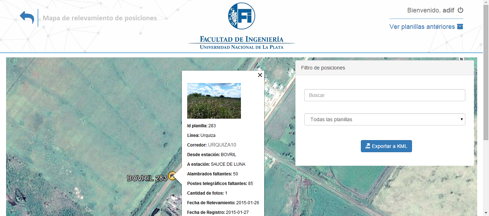

<div id="single-portfolio">
	<div id="portfolio-details" class="container">
		<a class="close-folio-item" href="#"><i class="fa fa-times"></i></a>
		
		<div class="row">
			<div class="col-sm-9">
				<div class="project-info">
					<h2>RBC-</h2>
					<h3>Sistema de relevamiento de infraestructuras ferroviarias</h3>
					<p>Permite el relevo y administración de datos sensibles de la infraestructura ferroviaria de la Nación utilizado por la Facultad de Ingeniería para el ministerio del interior y transportes.</p>
					<p>A través de un sistema web, se administran 13 tipos de planillas que se relevan día a día</p>
					<p>Además cuenta con una aplicación desarrollada para mobiles, que permite el relevo de las planillas por parte de los ingenieros que van recorriendo zonas de interés de cada provincia y cargando los datos, geolocalizaciones e imagenes desde un celular</p>
				</div>
			</div>
			<div class="col-sm-3">
				<div class="project-details">
					<h3>Detalles del Proyecto</h3>
					<p><span>Cliente: </span>Facultad de Ingeniería</p>
					<p><span>Fecha:</span> Octubre del 2013 - Agosto del 2014</p>
					<p><span>Tags:</span> Aplicación mobil, Imagenes, Geolocalización, Encriptado y Envío de copias de respaldo</p>
				</div>  
			</div>
		</div>
	</div>
</div>
